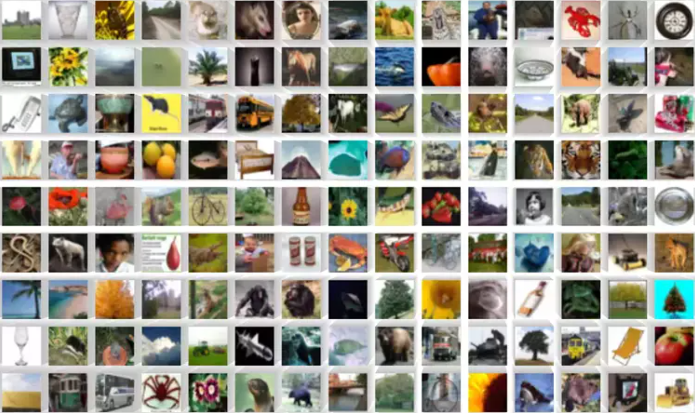

PyTorch - Convolutional Neural Networks
Im Jahr 1998 veröffentlichte Yann LeCun das erste Convolutional Neural Network (CNN) mit dem Namen LeNet-5.
Er war der erste, der die Architektur eines CNNs definierte und es erfolgreich auf die Erkennung von handgeschriebenen Ziffern anwandte.
{kind=link}
In dieser Aufgabe werden Sie ein Convolutional Neural Network (CNN) mit PyTorch erstellen, das auf dem CIFAR-100-Datensatz trainiert wird.
CIFAR-100 ist ein Datensatz, der 100 verschiedene Klassen von Bildern enthält, darunter Tiere, Fahrzeuge und alltägliche Objekte.
{kind=link}
In dieser Aufgabe arbeiten Sie in der Datei pytorch/cifar100.py.
Aufgabe 1: Data Augmentation Pipeline
In dieser Aufgabe werden Sie eine Data Augmentation Pipeline für den CIFAR-100-Datensatz erstellen. Data Augmentation ist eine Technik, die verwendet wird, um die Vielfalt der Trainingsdaten zu erhöhen, indem verschiedene Transformationen auf die Bilder angewendet werden. Dies kann helfen, die Generalisierungsfähigkeit des Modells zu verbessern und Overfitting zu reduzieren. Sie können verschiedene Transformationen wie zufällige Drehungen, Skalierungen, Spiegelungen und Farbänderungen anwenden. PyTorch bietet eine einfache Möglichkeit, Data Augmentation mit der torchvision.transforms-Bibliothek zu implementieren.
Dabei verwendet man in der Regel die Klasse torchvision.transforms.Compose, um mehrere Transformationen zu kombinieren. Sie sollten eine Pipeline erstellen, die mindestens folgende Transformationen enthält:
Konvertierung in Tensor: Die torchvision.transforms.ToTensor()-Klasse konvertiert die Bilder in PyTorch-Tensoren, die für das Training verwendet werden können.
Zufällige horizontale Spiegelung: Die torchvision.transforms.RandomHorizontalFlip()-Klasse spiegelt die Bilder zufällig horizontal, was bei vielen Objekten sinnvoll ist. Verwenden Sie p=0.5.
Zufällige Drehung: Die Klasse torchvision.transforms.RandomRotation() dreht die Bilder um einen zufälligen Winkel, um die Robustheit des Modells gegenüber verschiedenen Orientierungen zu erhöhen. Verwenden Sie degrees=15, um die Bilder um bis zu 15 Grad (plus oder minus) zu drehen.
Zufälliger Zuschnitt: Die torchvision.transforms.RandomCrop()-Klasse schneidet die Bilder zufällig aus, um die Robustheit des Modells gegenüber verschiedenen Bildausschnitten zu erhöhen. Verwenden Sie size=(32, 32) und padding=4, um die Bilder auf die Größe 32x32 zu beschneiden und einen Rand von 4 Pixeln hinzuzufügen.
Normalisierung: Die torchvision.transforms.Normalize()-Klasse normalisiert die Bilder, um die Pixelwerte in einen bestimmten Bereich zu bringen. Verwenden Sie mean = (0.5, ) und std = (0.5, ), um die Bilder zu normalisieren.
Achtung: Erstellen Sie auch eine zweite Pipeline für die Validierung, die nur die Konvertierung in Tensor und die Normalisierung enthält, ohne Data Augmentation.
Lösung anzeigen
training_transform = transforms.Compose([
transforms.ToTensor(),
transforms.RandomHorizontalFlip(p=0.5),
transforms.RandomRotation(degrees=15),
transforms.RandomCrop(size=(32, 32), padding=4),
transforms.Normalize((0.5,), (0.5,))
])
validation_transform = transforms.Compose([
transforms.ToTensor(),
transforms.Normalize((0.5,), (0.5,))
])
Aufgabe 2: Der Datensatz laden
Nun müssen Sie den CIFAR-100-Datensatz laden. PyTorch bietet eine einfache Möglichkeit, diesen Datensatz zu laden und in Trainings- und Validierungssets zu unterteilen. Sie können den Datensatz mit der Klasse torchvision.datasets.CIFAR100 laden.
Instantieren Sie zwei torchvision.datasets.CIFAR100-Objekte: eines für das Training und eines für die Validierung. Verwenden Sie die root-Option, um den Speicherort des Datensatzes anzugeben, und die download-Option, um den Datensatz herunterzuladen, falls er nicht vorhanden ist. Verwenden Sie die train-Option, um anzugeben, ob es sich um das Trainings- oder Validierungsset handelt.
Lösung anzeigen
training_data = datasets.CIFAR100(
root="data/cifar100",
train=True,
download=True,
transform=training_transform
)
validation_data = datasets.CIFAR100(
root="data/cifar100",
train=False,
download=True,
transform=validation_transform
)
Wrappen Sie die Datensätze in torch.utils.data.DataLoader-Objekte, um sie in Batches laden zu können. Ein Batch ist dabei eine Gruppe von Bildern, die gleichzeitig verarbeitet werden. Verwenden Sie die batch_size-Option, um die Größe der Batches festzulegen, und die shuffle-Option, um die Daten zufällig zu mischen. Wählen Sie eine Batch-Größe zwischen 32 und 256, abhängig von Ihrer Hardware und den verfügbaren Ressourcen.
Lösung anzeigen
training_set = torch.utils.data.DataLoader(training_data, batch_size=256, shuffle=True)
validation_set = torch.utils.data.DataLoader(validation_data, batch_size=256, shuffle=False)
Aufgabe 3: Das Netzwerk definieren
Implementieren Sie nun die Klasse CNNNetwork, die ein einfaches Convolutional Neural Network (CNN) mit mehreren Convolutional-Schichten und voll verbundenen Schichten definiert.
- class pytorch.cifar100.CNNNetwork[Quellcode]
Ein einfaches neuronales Netzwerk mit einer versteckten Schicht.
- __init__()[Quellcode]
Initialisiert das Netzwerk mit mehreren Convolutional-Schichten und voll verbundenen Schichten.
TODO:
Rufen Sie die Methode super().__init__() auf, um die Basisklasse zu initialisieren.
Definieren Sie die Faltungs-Schichten conv1, conv2, conv3 mit den entsprechenden Eingangs- und Ausgangskanälen. Verwenden Sie nn.Conv2d(…). Setzen Sie kernel_size=3 und padding=“same“ für alle Schichten. Verwenden Sie jeweils 16, 32 und 64 Ausgänge für conv1, conv2 und conv3.
Definieren Sie die voll verbundenen Schichten fc1 und fc2 mit den entsprechenden Eingangs- und Ausgangsgrößen. Verwenden Sie nn.Linear(…). Setzen Sie fc1 auf 512 Ausgänge und fc2 auf 100 Ausgänge.
Fügen Sie eine Flatten-Schicht hinzu, um die Ausgabe der Convolutional-Schichten in einen Vektor umzuwandeln.
Fügen Sie eine Max-Pooling-Schicht pool mit kernel_size=2 und stride=2 hinzu, um die räumliche Dimension der Feature-Maps zu reduzieren.
Verwenden Sie torch.relu für die Aktivierung.
- forward(x)[Quellcode]
Führt den Vorwärtsdurchlauf des Netzwerks aus.
TODO:
Wenden Sie abwechselnd immer die Faltungs-Schichten conv1, conv2, conv3 auf die Eingabe x an, gefolgt von einer ReLU-Aktivierung und einem Pooling-Layer.
Flatten Sie die Ausgabe der letzten Faltungs-Schicht mit .`self.flatten(x)`
Wenden Sie die voll verbundenen Schichten fc1 und fc2 auf die flachgelegte Ausgabe an, wobei Sie ReLU-Aktivierung auf die Ausgabe von fc1 anwenden.
Geben Sie die Ausgabe der letzten Schicht fc2 zurück.